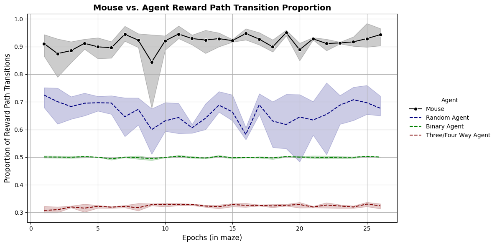

Table of Contents¶
- Load Project
- Simulated Agent Modelling
- Chi Square Analysis
- Simulated Agent, Binary Agent, 3 or 4-way Agent Modelling & Comparison
- Exploration-Exploitation (EE) Agent Evaluation
Load Project¶
Load project's configuration, metadata and combined data.
from pathlib import Path
import pandas as pd
from compass_labyrinth import load_project
project_path = Path(".").resolve() / "my_project_2"
# Import config and metadata
config, cohort_metadata = load_project(project_path=project_path)
# Import all sessions combined pose-estimation CSV
df_all_csv = pd.read_csv(project_path / "csvs" / "combined" / "Preprocessed_combined_file_exclusions.csv")
Simulated Agent Modelling¶
This function evaluates the performance of a simulated agent navigating the maze by estimating the proportion of optimal decisions (e.g., choosing the reward path) within fixed-size epochs across multiple simulations and bootstrap samples.
It also trims the simulated agent performance dataframe to the set of common epochs shared across all simulations, ensuring clean aggregation and plotting.
Recommended Use:¶
- Ensure
df_all_csvincludes 'Session', 'Grid Number', and the specified decision node labels. - Set
epoch_sizeto define the number of frames grouped into each epoch (e.g., 1000). - Set
n_bootstrapto the number of bootstrap resamples per simulation. - Set
n_simulationsto the number of independent simulated agents to evaluate. - Set
decision_labelto the node type representing decision points (e.g., 'Decision (Reward)'). - Set
reward_labelto the region considered as the optimal path (e.g., 'Reward Path').
from compass_labyrinth.behavior.behavior_metrics.simulation_modeling import evaluate_agent_performance
# Set these values
EPOCH_SIZE = 1000
N_BOOTSTRAP = 10000
N_SIMULATIONS = 100
DECISION_LABEL = "Decision (Reward)"
REWARD_LABEL = "reward_path"
GENOTYPE = "WT"
sim_results = evaluate_agent_performance(
df=df_all_csv,
epoch_size=EPOCH_SIZE,
n_bootstrap=N_BOOTSTRAP,
n_simulations=N_SIMULATIONS,
decision_label=DECISION_LABEL,
reward_label=REWARD_LABEL,
trim=True,
)
sim_results["WT"]
Max common epoch across all sessions: 26
Max common epoch across all sessions: 55
| Actual Reward Path % | Simulated Agent Reward Path % | Actual Reward Path % CI Lower | Actual Reward Path % CI Upper | Simulated Agent Reward Path % CI Lower | Simulated Agent Reward Path % CI Upper | Relative Performance | Session | Epoch Number | |
|---|---|---|---|---|---|---|---|---|---|
| 0 | 0.923940 | 0.748434 | 0.885496 | 0.961832 | 0.732214 | 0.764198 | 1.234498 | 3 | 1 |
| 1 | 0.927493 | 0.747362 | 0.900763 | 0.954198 | 0.737023 | 0.757521 | 1.241023 | 3 | 2 |
| 2 | 0.896362 | 0.699103 | 0.862069 | 0.931034 | 0.684397 | 0.713793 | 1.282159 | 3 | 3 |
| 3 | 0.917142 | 0.730479 | 0.888430 | 0.946281 | 0.718965 | 0.742068 | 1.255534 | 3 | 4 |
| 4 | 0.932080 | 0.718258 | 0.900524 | 0.958115 | 0.702984 | 0.733353 | 1.297696 | 3 | 5 |
| ... | ... | ... | ... | ... | ... | ... | ... | ... | ... |
| 73 | 0.885978 | 0.680947 | 0.822785 | 0.936709 | 0.658734 | 0.702785 | 1.301098 | 5 | 22 |
| 74 | 0.916607 | 0.710688 | 0.882353 | 0.946078 | 0.697252 | 0.723775 | 1.289746 | 5 | 23 |
| 75 | 0.914044 | 0.754817 | 0.880383 | 0.942584 | 0.745742 | 0.763493 | 1.210947 | 5 | 24 |
| 76 | 0.897510 | 0.670536 | 0.860215 | 0.930108 | 0.654409 | 0.686454 | 1.338496 | 5 | 25 |
| 77 | 0.960761 | 0.723498 | 0.936275 | 0.980392 | 0.712353 | 0.734510 | 1.327939 | 5 | 26 |
78 rows × 9 columns
Plot 1: Simulated Agent vs Mouse Performance across Time¶
from compass_labyrinth.behavior.behavior_metrics.simulation_modeling import plot_agent_transition_performance
plot_agent_transition_performance(
config=config,
evaluation_results=sim_results,
)
Figure saved at: /Users/luiztauffer/Github/CoMPASS-Labyrinth/notebooks/my_project_2/figures/all_genotypes_sim_agent_mouse_perf.pdf

Plot 2: Relative Performance across Time¶
from compass_labyrinth.behavior.behavior_metrics.simulation_modeling import plot_relative_agent_performance
plot_relative_agent_performance(
config=config,
evaluation_results=sim_results,
)
Figure saved at: /Users/luiztauffer/Github/CoMPASS-Labyrinth/notebooks/my_project_2/figures/all_genotypes_relative_perf.pdf

Plot 3: Avg. Simulated Agent and Mouse Performance across Sessions¶
from compass_labyrinth.behavior.behavior_metrics.simulation_modeling import run_mixedlm_for_all_genotypes
pvals_by_genotype = run_mixedlm_for_all_genotypes(
config=config,
evaluation_results=sim_results,
plot_palette=["purple", "grey"],
)
print(pvals_by_genotype)
Figure saved at: /Users/luiztauffer/Github/CoMPASS-Labyrinth/notebooks/my_project_2/figures/cumulative_sim_agent_mouse_perf.pdf

{'WT': np.float64(6.127002099983219e-215), 'KO': np.float64(0.0)}
Chi Square Analysis¶
This workflow calculates the chi-square divergence between actual animal performance and a simulated agent’s expected behavior across epochs, and summarizes the result using both rolling and cumulative statistics to track behavioral divergence over time.
Recommended Use:¶
- Ensure
df_simcontains 'Actual Reward Path %', 'Simulated Agent Reward Path %', 'Epoch Number', and 'Session' columns. - Use
compute_chi_square_statistic()to compute per-epoch chi-square scores comparing actual vs. simulated usage. - Use
compute_rolling_chi_square()to calculate rolling averages over time for trend visualization. - Use
compute_cumulative_chi_square()to track the running average of chi-square divergence over all prior epochs.
from compass_labyrinth.behavior.behavior_metrics.simulation_modeling import run_chi_square_analysis
ROLLING_WINDOW = 3
# Compute chi-square stats for each genotype
chisquare_results = run_chi_square_analysis(
config=config,
evaluation_results=sim_results,
rolling_window=ROLLING_WINDOW
)
from compass_labyrinth.behavior.behavior_metrics.simulation_modeling import plot_chi_square_and_rolling
plot_chi_square_and_rolling(
config=config,
chisquare_results=chisquare_results,
)
Figure saved at: /Users/luiztauffer/Github/CoMPASS-Labyrinth/notebooks/my_project_2/figures/all_genotypes_chi_square_rolling.pdf

from compass_labyrinth.behavior.behavior_metrics.simulation_modeling import plot_rolling_mean
plot_rolling_mean(
config=config,
chisquare_results=chisquare_results,
)
Figure saved at: /Users/luiztauffer/Github/CoMPASS-Labyrinth/notebooks/my_project_2/figures/all_genotypes_average_chi_square_rolling.pdf

from compass_labyrinth.behavior.behavior_metrics.simulation_modeling import plot_cumulative_chi_square
plot_cumulative_chi_square(
config=config,
chisquare_results=chisquare_results,
)
Figure saved at: /Users/luiztauffer/Github/CoMPASS-Labyrinth/notebooks/my_project_2/figures/all_genotypes_cumulative_chi_square.pdf

Simulated Agent, Binary Agent, 3 or 4-way Agent Modelling & Comparison¶
This function simulates multiple agent types (simulated, binary, and 3/4-way), evaluates their decision performance over fixed-size epochs, and compares them to actual animal decisions using bootstrap confidence intervals.
Recommended Use:¶
- Ensure
df_all_csvincludes 'Session', 'NodeType', 'Region', and 'Grid Number'. - Use
epoch_sizeto define the time resolution (e.g., 1000 frames per epoch). - Set
n_simulationsandn_bootstrapto define agent variability and confidence bounds. - Use
decision_labelandreward_labelto define relevant transitions (e.g., 'Decision (Reward)', 'Reward Path'). - Optional: Pass custom 3-way and 4-way decision node sets.
from compass_labyrinth.behavior.behavior_metrics.simulation_modeling import evaluate_agent_performance_multi
# Evaluate agent vs. actual decisions
df_all_simulated = evaluate_agent_performance_multi(
df=df_all_csv,
epoch_size=EPOCH_SIZE,
n_bootstrap=N_BOOTSTRAP,
n_simulations=N_SIMULATIONS,
decision_label=DECISION_LABEL,
reward_label=REWARD_LABEL,
trim=True,
)
df_all_simulated
Max common epoch across all sessions: 26
| Actual Reward Path % | Random Agent Reward Path % | Binary Agent Reward Path % | Three/Four Way Agent Reward Path % | Actual Reward Path % CI Lower | Actual Reward Path % CI Upper | Random Agent Reward Path % CI Lower | Random Agent Reward Path % CI Upper | Binary Agent Reward Path % CI Lower | Binary Agent Reward Path % CI Upper | Three/Four Way Agent Reward Path % CI Lower | Three/Four Way Agent Reward Path % CI Upper | Relative Performance (Actual/Random) | Relative Performance (Actual/Binary) | Session | Epoch Number | |
|---|---|---|---|---|---|---|---|---|---|---|---|---|---|---|---|---|
| 0 | 0.923615 | 0.751548 | 0.497364 | 0.300797 | 0.885496 | 0.961832 | 0.735573 | 0.767176 | 0.489084 | 0.505420 | 0.291756 | 0.310076 | 1.228951 | 1.857021 | 3 | 1 |
| 1 | 0.927951 | 0.749971 | 0.496901 | 0.309913 | 0.900763 | 0.954198 | 0.739998 | 0.760153 | 0.491945 | 0.501832 | 0.304008 | 0.315840 | 1.237315 | 1.867476 | 3 | 2 |
| 2 | 0.896551 | 0.692951 | 0.496214 | 0.317039 | 0.862069 | 0.926724 | 0.678103 | 0.707845 | 0.491078 | 0.501422 | 0.310733 | 0.323362 | 1.293815 | 1.806782 | 3 | 3 |
| 3 | 0.917495 | 0.731893 | 0.501693 | 0.314694 | 0.888430 | 0.946281 | 0.719669 | 0.744132 | 0.496446 | 0.507025 | 0.308719 | 0.320702 | 1.253591 | 1.828797 | 3 | 4 |
| 4 | 0.932093 | 0.720083 | 0.499386 | 0.325859 | 0.900524 | 0.963351 | 0.704660 | 0.735395 | 0.493243 | 0.505550 | 0.319948 | 0.331780 | 1.294425 | 1.866479 | 3 | 5 |
| ... | ... | ... | ... | ... | ... | ... | ... | ... | ... | ... | ... | ... | ... | ... | ... | ... |
| 125 | 0.947535 | 0.684012 | 0.497143 | 0.313984 | 0.926573 | 0.968531 | 0.674091 | 0.694058 | 0.492483 | 0.501853 | 0.308846 | 0.318986 | 1.385261 | 1.905960 | 7 | 22 |
| 126 | 0.907552 | 0.683316 | 0.497201 | 0.323391 | 0.870370 | 0.944444 | 0.669812 | 0.696728 | 0.490864 | 0.503642 | 0.315864 | 0.330864 | 1.328159 | 1.825321 | 7 | 23 |
| 127 | 0.946756 | 0.717656 | 0.492673 | 0.319343 | 0.920705 | 0.969163 | 0.705419 | 0.729868 | 0.487225 | 0.498062 | 0.313348 | 0.325419 | 1.319234 | 1.921670 | 7 | 24 |
| 128 | 0.940703 | 0.697772 | 0.496165 | 0.310431 | 0.911330 | 0.965517 | 0.685663 | 0.709901 | 0.490342 | 0.501970 | 0.303547 | 0.317241 | 1.348153 | 1.895950 | 7 | 25 |
| 129 | 0.919268 | 0.688790 | 0.495408 | 0.332614 | 0.879195 | 0.953020 | 0.674094 | 0.703221 | 0.488792 | 0.501950 | 0.325973 | 0.339060 | 1.334613 | 1.855579 | 7 | 26 |
130 rows × 16 columns
Plot 5: All Agents Comparative Performance over time¶
from compass_labyrinth.behavior.behavior_metrics.simulation_modeling import plot_agent_vs_mouse_performance_multi
GENOTYPE = 'WT'
plot_agent_vs_mouse_performance_multi(
config=config,
df_metrics=df_all_simulated,
cohort_metadata=cohort_metadata,
genotype=GENOTYPE,
)
Figure saved at: /Users/luiztauffer/Github/CoMPASS-Labyrinth/notebooks/my_project_2/figures/WT_multiple_agent.pdf

Plot 6: Cumulative Multiple Agent Performance¶
This function compares average reward path transition percentages across sessions for mouse and simulated agents using a boxplot. Useful for visualizing group-wise strategy efficiency.
Recommended Use:¶
- Provide
df_metricsfrom evaluate_agent_performance_multi(). - Provide
cohort_metadatawith 'Session #' and 'Genotype'. - Set
genotypeto the group you want to compare.
from compass_labyrinth.behavior.behavior_metrics.simulation_modeling import plot_cumulative_agent_comparison_boxplot_multi
GENOTYPE = 'WT'
plot_cumulative_agent_comparison_boxplot_multi(
config=config,
df_metrics=df_all_simulated,
cohort_metadata=cohort_metadata,
genotype=GENOTYPE,
figsize=(7, 7),
)
Figure saved at: /Users/luiztauffer/Github/CoMPASS-Labyrinth/notebooks/my_project_2/figures/WT_cumulative_multiple_agent.pdf

Exploration-Exploitation (EE) Agent Evaluation¶
This module simulates an exploration-exploitation agent with a tunable exploration rate and compares its reward path transition performance to that of real mice over fixed-size epochs.
Recommended Use:¶
- Ensure
df_all_csvincludes 'Session', 'NodeType', 'Region', and 'Grid Number' columns. - Set
exploration_rateto define the agent’s behavior:- Low values (e.g., 0.2) bias toward exploitation (optimal paths).
- High values (e.g., 0.9) bias toward exploration (random paths).
- Use
segment_sizeconsistently in both analysis and plotting functions. - Use
n_simulationsandn_bootstrapto determine statistical confidence. - Use
decision_labelandreward_labelto define what constitutes a decision and a reward-oriented move.
from compass_labyrinth.behavior.behavior_metrics.simulation_modeling import run_exploration_agent_analysis_EE
import numpy as np
SEGMENT_SIZE = 1000 # Ensure this is consistent across functions
EXPLORATION_RATE = 0.5 # Tunable parameter for agent behavior
df_agent_perf = run_exploration_agent_analysis_EE(
df=df_all_csv,
exploration_rate=EXPLORATION_RATE,
segment_size=SEGMENT_SIZE,
n_bootstrap=10000,
n_simulations=100,
decision_label='Decision (Reward)',
reward_label='reward_path',
)
df_agent_perf
Max common epoch across all sessions: 26
| Actual Reward Path % | Agent Reward Path % | Actual Reward Path % CI Lower | Actual Reward Path % CI Upper | Agent Reward Path % CI Lower | Agent Reward Path % CI Upper | Relative Performance | Session | Epoch Number | |
|---|---|---|---|---|---|---|---|---|---|
| 0 | 0.863970 | 0.855894 | 0.826291 | 0.901408 | 0.847509 | 0.864131 | 1.009437 | 6 | 1 |
| 1 | 0.894246 | 0.863607 | 0.855556 | 0.933333 | 0.855331 | 0.871722 | 1.035478 | 6 | 2 |
| 2 | 0.897874 | 0.851012 | 0.862245 | 0.933673 | 0.841939 | 0.859745 | 1.055066 | 6 | 3 |
| 3 | 0.884607 | 0.847398 | 0.843537 | 0.925170 | 0.837347 | 0.857483 | 1.043909 | 6 | 4 |
| 4 | 0.877539 | 0.873403 | 0.836257 | 0.918129 | 0.865322 | 0.881345 | 1.004736 | 6 | 5 |
| ... | ... | ... | ... | ... | ... | ... | ... | ... | ... |
| 125 | 0.885952 | 0.848380 | 0.822785 | 0.936709 | 0.836329 | 0.860259 | 1.044287 | 5 | 22 |
| 126 | 0.916440 | 0.856181 | 0.882353 | 0.946078 | 0.848529 | 0.863676 | 1.070381 | 5 | 23 |
| 127 | 0.914030 | 0.876937 | 0.880383 | 0.942584 | 0.871148 | 0.882632 | 1.042298 | 5 | 24 |
| 128 | 0.897738 | 0.837555 | 0.860215 | 0.935484 | 0.829194 | 0.845806 | 1.071855 | 5 | 25 |
| 129 | 0.960766 | 0.860857 | 0.936275 | 0.980392 | 0.854363 | 0.867255 | 1.116057 | 5 | 26 |
130 rows × 9 columns
Plot 7: Agent Performance Across Varying Exploration Rates¶
Visualize agent vs. mouse performance across exploration rates:
from compass_labyrinth.behavior.behavior_metrics.simulation_modeling import plot_exploration_rate_performance_EE
# Range of exploration rate values
EXPLORATION_RATE_RANGE = np.arange(0.2, 1.0, 0.1)
plot_exploration_rate_performance_EE(
config=config,
df_source=df_all_csv,
exploration_rates=EXPLORATION_RATE_RANGE,
segment_size=SEGMENT_SIZE,
trim=True,
)
Exploration rate = 0.2 being processed....
Max common epoch across all sessions: 26
Exploration rate = 0.3 being processed....
Max common epoch across all sessions: 26
Exploration rate = 0.4 being processed....
Max common epoch across all sessions: 26
Exploration rate = 0.5 being processed....
Max common epoch across all sessions: 26
Exploration rate = 0.6 being processed....
Max common epoch across all sessions: 26
Exploration rate = 0.7 being processed....
Max common epoch across all sessions: 26
Exploration rate = 0.8 being processed....
Max common epoch across all sessions: 26
Exploration rate = 0.9 being processed....
Max common epoch across all sessions: 26
Max common epoch across all sessions: 26
Figure saved at: /Users/luiztauffer/Github/CoMPASS-Labyrinth/notebooks/my_project_2/figures/ee_agent.pdf